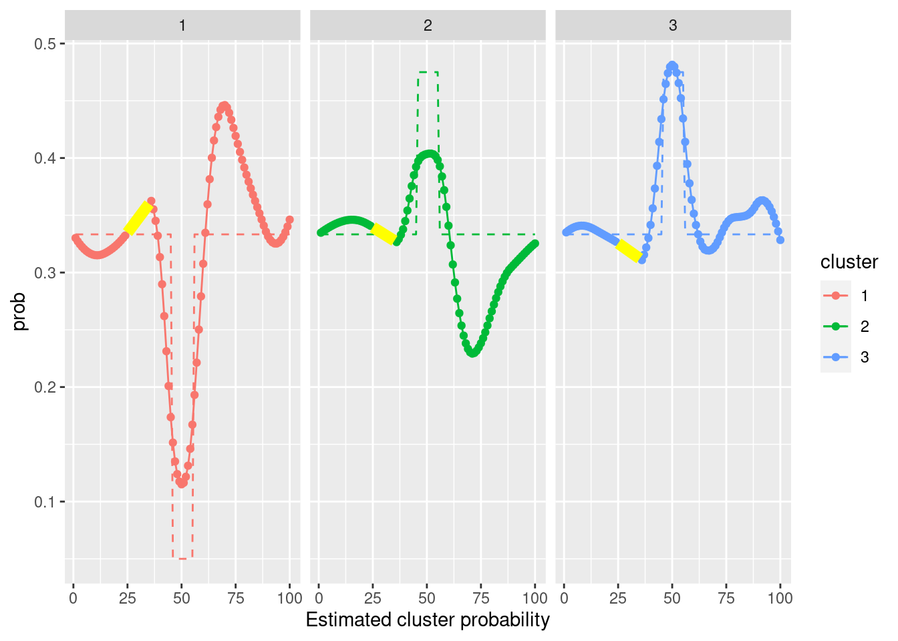
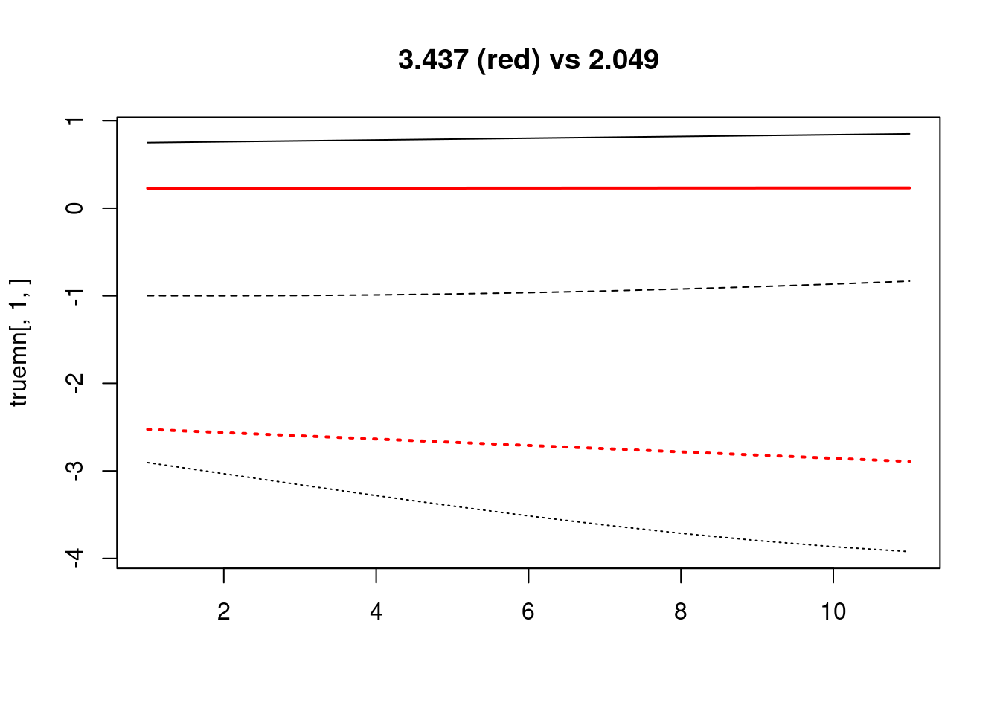

12 Tuning the regularization parameters for flowsmooth
We’re going to take a huge leap, and assume the flowsmooth() function has been
built. We need to build up quite a few functions before we’re able to do
cross-validation. These include:
- Predicting out-of-sample, using
predict_flowsmooth(). - Evaluating data fit (by likelihood) in an out-of-sample measurement, using
objective(..., unpenalized = TRUE). - Numerically estimating the maximum regularization values to test, using
get_max_lambda(). - Making data splits, using
make_cv_folds().
12.1 Predicting and evaluating on new time points
First, let’s write a couple of functions interpolate_mn() and
interpolate_prob() which linearly interpolate the means and probabilities at
new time points.
#' Do a linear interpolation of the cluster means.
#'
#' @param x Training times.
#' @param tt Prediction time.
#' @param iclust Cluster number.
#' @param mn length(x) by dimdat by numclust matrix.
#'
#' @return A dimdat-length vector.
interpolate_mn <- function(x, tt, iclust, mn){
## Basic checks
stopifnot(length(x) == dim(mn)[1])
stopifnot(iclust <= dim(mn)[3])
if(tt %in% x) return(mn[which(x==tt),,iclust,drop=TRUE])
## Set up for linear interpolation
floor_t <- max(x[which(x <= tt)])
ceiling_t <- min(x[which(x >= tt)])
floor_t_ind <- which(x == floor_t)
ceiling_t_ind <- which(x == ceiling_t)
## Do the linear interpolation
mn_t <-
mn[ceiling_t_ind,,iclust,drop=TRUE]*(tt - floor_t)/(ceiling_t - floor_t) +
mn[floor_t_ind,,iclust,drop=TRUE]*(ceiling_t - tt)/(ceiling_t - floor_t)
## Basic checks
stopifnot(length(mn_t) == dim(mn)[2])
return(mn_t)
}#' Do a linear interpolation of the cluster means.
#'
#' @param x Training times.
#' @param tt Prediction time.
#' @param iclust Cluster number.
#' @param prob length(x) by numclust array or matrix.
#'
#' @return One probability.
interpolate_prob <- function(x, tt, iclust, prob){
## Basic checks
numdat = dim(prob)[1]
numclust = dim(prob)[2]
stopifnot(length(x) == numdat)
stopifnot(iclust <= numclust)
if(tt %in% x) return(prob[which(x == tt),iclust,drop=TRUE])
## Set up for linear interpolation
floor_t <- max(x[which(x <= tt)])
ceiling_t <- min(x[which(x >= tt)])
floor_t_ind <- which(x == floor_t)
ceiling_t_ind <- which(x == ceiling_t)
## Do the linear interpolation
prob_t <-
prob[ceiling_t_ind,iclust,drop=TRUE]*(tt - floor_t)/(ceiling_t - floor_t) +
prob[floor_t_ind,iclust,drop=TRUE]*(ceiling_t - tt)/(ceiling_t - floor_t) # linear interpolation between floor_t and ceiling_t
## Basic checks
stopifnot(length(prob_t) == 1)
stopifnot(0 <= prob_t & prob_t <= 1)
return(prob_t)
}Next, let’s build a prediction function predict_flowsmooth() which takes the
model object obj, and the new time points newtimes, and produces.
#' Prediction: Given new timepoints in the original time interval,generate a set
#' of means and probs (and return the same Sigma).
#'
#' @param obj Object returned from covariate EM flowsmooth().
#' @param newtimes New times at which to make predictions.
#'
#' @return List containing mean, prob, and sigma, and x.
#'
#' @export
#'
predict_flowsmooth <- function(obj, newtimes = NULL){
## Check the dimensions
newx <- newtimes
if(is.null(newtimes)){ newx = obj$x }
## Check if the new times are within the time range of the original data (why is this important)?
if(FALSE) stopifnot(all(sapply(newx, FUN = function(t) t >= min(obj$x) & t <= max(obj$x))))
## Setup some things
x <- obj$x
TT_new = length(newx)
numclust = obj$numclust
dimdat = obj$dimdat
## Predict the means (manually).
newmn_array = array(NA, dim = c(TT_new, dimdat, numclust))
for(iclust in 1:numclust){
newmn_oneclust <- lapply(newx, function(tt){
interpolate_mn(x, tt, iclust, obj$mn)
}) %>% do.call(rbind, . )
newmn_array[,,iclust] = newmn_oneclust
}
## Predict the probs.
newprob = array(NA, dim = c(TT_new, numclust))
for(iclust in 1:numclust){
newprob_oneclust <- lapply(newx, function(tt){
interpolate_prob(x, tt, iclust, obj$prob)
}) %>% do.call(c, .)
newprob[,iclust] = newprob_oneclust
}
## Basic checks
stopifnot(all(dim(newprob) == c(TT_new,numclust)))
stopifnot(all(newprob >= 0))
stopifnot(all(newprob <= 1))
## Return the predictions
return(list(mn = newmn_array,
prob = newprob,
sigma = obj$sigma,
x = newx))
}Here’s a quick test (no new data) to make sure this function returns a list containing: the mean, probability, covariance, and new times.
testthat::test_that("The prediction function returns the right things", {
## Generate data
set.seed(100)
dt <- gendat_1d(100, rep(100, 100), die_off_time = 0.45)
ylist = dt %>% dt2ylist()
x = dt %>% pull(time) %>% unique()
obj <- flowsmooth(ylist = ylist,
x = x,
maxdev = 5,
numclust = 3,
lambda = 0.02,
l = 1,
l_prob = 2,
lambda_prob = .005, ##
nrestart = 1,
niter = 3)
predobj = predict_flowsmooth(obj)
testthat::expect_named(predobj, c("mn", "prob", "sigma", "x"))
})## Test passed 🎊Now, we try to make predictions at new held-out time points held_out=25:35,
from a model that is estimated without those time points.
## Generate data
set.seed(100)
dt <- gendat_1d(100, rep(100, 100), die_off_time = 0.45)
dt_model <- gendat_1d(100, rep(100, 100), die_off_time = 0.45, return_model = TRUE)
held_out = 25:35
dt_subset = dt %>% subset(time %ni% held_out)
ylist = dt_subset %>% dt2ylist()
x = dt_subset %>% pull(time) %>% unique()
obj <- flowsmooth(ylist = ylist,
x = x,
maxdev = 5,
numclust = 3,
lambda = 0.02,
l = 1,
l_prob = 2,
lambda_prob = .005, ##
nrestart = 1)
## Also reorder the cluster labels of the truth, to match the fitted model.
ord = obj$mn[,1,] %>% colSums() %>% order(decreasing=TRUE)
lookup <- setNames(c(1:obj$numclust), ord)
dt_model$cluster = lookup[as.numeric(dt_model$cluster)] %>% as.factor()
## Reorder the cluster lables of the fitted model.
obj = reorder_clust(obj)
testthat::test_that("prediction function returns the right things", {
predobj = predict_flowsmooth(obj, newtimes = held_out)
## Check a few things
testthat::expect_equal(predobj$x, held_out)
testthat::expect_equal(rowSums(predobj$prob), rep(1, length(held_out)))
testthat::expect_equal(dim(predobj$mn), c(length(held_out), 1, 3))
})## Test passed 😸Plot the predicted means and probabilities, with purple points at the interpolated means. We can see that it works as expected.
predobj = predict_flowsmooth(obj, newtimes = held_out)
g = plot_1d(ylist, obj, x = x) +
geom_line(aes(x = time, y = mean, group = cluster),
data = dt_model,## %>% subset(time %ni% held_out),
linetype = "dashed", size=2, alpha = .7)
## Plot the predicted means
preds = lapply(1:3, function(iclust){
tibble(mn = predobj$mn %>% .[,,iclust, drop = TRUE],
prob = predobj$prob %>% .[,iclust, drop = TRUE],
time = held_out,
cluster = iclust)
}) %>% bind_rows()
g + geom_line(aes(x=time, y=mn, group = cluster), data = preds, col = 'yellow', size = 2)##, alpha = .8) ## Warning: The `x` argument of `as_tibble.matrix()` must have unique column names if `.name_repair` is omitted as of tibble 2.0.0.
## Using compatibility `.name_repair`.## Joining, by = c("time", "cluster")
The estimated probabilities are shown here, with purple points showing the interpolation. It works as expected.
plot_prob(obj, x=x) +
geom_line(aes(x = time, y = prob, group = cluster, color = cluster),
data = dt_model, linetype = "dashed") +
facet_wrap(~cluster) +
geom_line(aes(x = time, y = prob), data = preds, col = 'yellow', size = 3)
Let’s just try to space inputs unevenly, by x.
set.seed(100)
dt <- gendat_1d(1000, rep(100, 1000), die_off_time = 0.45)
dt_model <- gendat_1d(1000, rep(100, 1000), die_off_time = 0.45, return_model = TRUE)
## held_out = 25:35
## dt_subset = dt %>% subset(time %ni% held_out)
ylist_orig = dt %>% dt2ylist()
## x = dt %>% pull(time) %>% unique()
## x = runif(min = 1, max = 100, n = 100) %>% sort()
x = sample(1:1000, 100) %>% sort()
ylist = ylist_orig[x]
obj <- flowsmooth(ylist = ylist,
x = x,
maxdev = 5,
numclust = 3,
lambda = 0.02,
l = 1,
l_prob = 2,
lambda_prob = .005, ##
nrestart = 1)
## Also reorder the cluster labels of the truth, to match the fitted model.
ord = obj$mn[,1,] %>% colSums() %>% order(decreasing=TRUE)
lookup <- setNames(c(1:obj$numclust), ord)
dt_model$cluster = lookup[as.numeric(dt_model$cluster)] %>% as.factor()
## Reorder the cluster lables of the fitted model.
obj = reorder_clust(obj)
## Make mean predictions
newtimes = seq(from=min(x),to=max(x),length=10000)
predobj = predict_flowsmooth(obj, newtimes = newtimes)
## Plot the predicted means
preds = lapply(1:3, function(iclust){
tibble(mn = predobj$mn %>% .[,,iclust, drop = TRUE],
prob = predobj$prob %>% .[,iclust, drop = TRUE],
time = newtimes,
cluster = iclust)
}) %>% bind_rows() The estimated \(\mu\) in the training data are shown as solid triangle points. The out-of-sample \(\mu\) predictions made on a fine grid of time points (shown by the yellow lines) look fine.
g = plot_1d(ylist, obj, x = x)
g + ggtitle("Fitted model")
g + geom_line(aes(x=time, y=mn, group = cluster), data = preds, col = 'yellow', size = rel(1), alpha = .7) + ggtitle("Predictions on fine grid of times") ## Joining, by = c("time", "cluster")

The out-of-sample \(\pi\) predictions are the lines that connect the points. They look great as well.
plot_prob(obj, x=x) +
geom_line(aes(x = time, y = prob, group = cluster, color = cluster),
data = dt_model, linetype = "dashed") +
facet_wrap(~cluster)
## geom_line(aes(x = time, y = prob), data = preds, col = 'yellow', size = rel(1), alpha = .7)
Next, evaluating data fit (by likelihood) in an out-of-sample measurement.
## Generate data
set.seed(100)
dt <- gendat_1d(100, rep(100, 100), die_off_time = 0.45)
dt_model <- gendat_1d(100, rep(100, 100), die_off_time = 0.45, return_model = TRUE)
held_out = 25:35
dt_subset = dt %>% subset(time %ni% held_out)
ylist = dt_subset %>% dt2ylist()
x = dt_subset %>% pull(time) %>% unique()
obj <- flowsmooth(ylist = ylist,
x = x,
maxdev = 5,
numclust = 3,
lambda = 0.02,
l = 1,
l_prob = 2,
lambda_prob = .005, ##
nrestart = 1)
## Make prediction
predobj = predict_flowsmooth(obj, newtimes = held_out)
## Use the predicted (interpolated) model parameters
obj_pred = objective(mu = predobj$mn, prob = predobj$prob, sigma = predobj$sigma, ylist = ylist[held_out],
unpenalized = TRUE)
truemn = array(NA, dim = dim(predobj$mn))
truemn[,1,] =
dt_model %>% select(time, cluster, mean) %>%
pivot_wider(names_from = cluster, values_from = mean) %>% subset(time %in% held_out) %>%
select(-time) %>% as.matrix()
## Use the true mean
obj_better = objective(mu = truemn, prob = predobj$prob, sigma = predobj$sigma, ylist = ylist[held_out],
unpenalized = TRUE)The fit is similar for the predicted model and the estimated model.
{r before-push-away, fig.width = 7, fig.height = 5}) matplot(truemn[,1,], type = 'l', col = 'black', main = paste0(round(obj_pred,3), " (red) vs ", round(obj_better, 3))) matlines(predobj$mn[,1,], lwd = 2, col = 'red')
If you push one of the cluster means away, the fit worsens.
predobj$mn[,1,] = predobj$mn[,1,] + .5
obj_pred = objective(mu = predobj$mn, prob = predobj$prob, sigma = predobj$sigma, ylist = ylist[held_out],
unpenalized = TRUE)
matplot(truemn[,1,], type = 'l', col = 'black', main = paste0(round(obj_pred,3), " (red) vs ", round(obj_better,3)))
matlines(predobj$mn[,1,], lwd = 2, col = 'red')
Next, try a 1d example with ends cut off.
set.seed(100)
dt <- gendat_1d(TT, ntlist, die_off_time = 0.45)
dt1 = dt %>% subset(time <= 50)
dt2 = dt %>% subset(time > 50)12.2 Maximum \((\lambda_\mu, \lambda_\pi)\) values to test
What should the maximum value of regularization parameters to use? It’s useful to be able to calculate the smallest value of regularization parameters that result in fully flat \(\mu\) and \(\pi\) over time, in all clusters. Call these \(\lambda_\mu^{\text{max}}\) and \(\lambda_{\pi}^{\text{max}}\). Then, as candidates for cross-validation, we can use a grid of logarithmically-spaced pairs of values between (0,0) and \((\lambda_{\mu}^{\text{max}}, \lambda_{\pi}^{\text{max}})\).
The function get_max_lambda() numerically estimates this maximum pair
\((\lambda_{\mu}^{\text{max}}, \lambda_{\pi}^{\text{max}})\). It proceeds by first
running flowsmooth() on a very large pair \((\lambda_\mu, \lambda_\pi)\), then
sequentially halving both values while checking if the resulting estimated \(\mu\)
and \(\pi\) are all flat over time. As soon as they cease to be flat, we stop
and take the immediately previous pair of values of \((\lambda_\mu, \lambda_\pi)\).
get_max_lambda() is a wrapper around the workhorse calc_max_lambda(). It
obtains the value and saves it to a maxres_file (which defaults to
maxres.Rdata) in the destin directory.
#' A wrapper for \code{calc_max_lambda}. Saves the two maximum lambda values in
#' a file.
#'
#' @param destin Where to save the output (A two-lengthed list called
#' "maxres").
#' @param maxres_file Filename for output. Defaults to maxres.Rdata.
#' @param ... Additional arguments to \code{flowsmooth()}.
#' @inheritParams calc_max_lambda
#'
#' @return No return
#'
#' @export
get_max_lambda <- function(destin, maxres_file = "maxres.Rdata",
ylist,
countslist,
numclust,
maxdev,
max_lambda_prob,
max_lambda_mean,
...){
if(file.exists(file.path(destin, maxres_file))){
load(file.path(destin, maxres_file))
cat("Maximum regularization values are loaded.", fill=TRUE)
return(maxres)
} else {
print(Sys.time())
cat("Maximum regularization values being calculated.", fill = TRUE)
cat("with initial lambda values (prob and mu):", fill = TRUE)
print(c(max_lambda_prob, max_lambda_mean));
maxres = calc_max_lambda(ylist = ylist,
countslist = countslist,
numclust = numclust,
maxdev = maxdev,
## This function's settings
max_lambda_prob = max_lambda_prob,
max_lambda_mean = max_lambda_mean,
...)
save(maxres, file = file.path(destin, maxres_file))
cat("file was written to ", file.path(destin, maxres_file), fill=TRUE)
cat("maximum regularization value calculation done.", fill = TRUE)
print(Sys.time())
return(maxres)
}
}The aforementioned workhorse calc_max_lambda() is here.
#' Estimate maximum lambda values numerically. First starts with a large
#' initial value \code{max_lambda_mean} and \code{max_lambda_prob}, and runs
#' the EM algorithm on decreasing set of values (sequentially halved). This
#' stops once you see non-flat probabilities or means, and returns the *smallest*
#' regularization (lambda) value pair that gives full sparsity.
#'
#' Note that the \code{zero_stabilize=TRUE} option is used in
#' \code{flowsmooth()}, which basically means the EM algorithm runs only until
#' the zero pattern stabilizes.
#'
#' @param ylist List of responses.
#' @param numclust Number of clusters.
#' @param max_lambda_mean Defaults to 4000.
#' @param max_lambda_prob Defaults to 1000.
#' @param iimax Maximum value of x for 2^{-x} factors to try.
#' @param ... Other arguments to \code{flowsmooth_once()}.
#'
#' @return list containing the two maximum values to use.
#'
#' @export
calc_max_lambda <- function(ylist, countslist = NULL, numclust,
max_lambda_mean = 4000,
max_lambda_prob = 1000,
verbose = FALSE,
iimax = 16,
...){
## Get range of regularization parameters.
facs = sapply(1:iimax, function(ii) 2^(-ii+1)) ## DECREASING order
print("running the models once")
for(ii in 1:iimax){
## print_progress(ii, iimax, "regularization values", fill = TRUE)
cat("###############################################################", fill=TRUE)
cat("#### lambda_prob = ", max_lambda_prob * facs[ii],
" and lambda_beta = ", max_lambda_mean * facs[ii], "being tested. ", fill=TRUE)
cat("###############################################################", fill=TRUE)
res = flowsmooth_once(ylist = ylist,
countslist = countslist,
numclust = numclust,
lambda_prob = max_lambda_prob * facs[ii],
lambda_mean = max_lambda_mean * facs[ii],
verbose = verbose,
zero_stabilize = TRUE,
...)
## TODO: CHECK FLATNESS INSTEAD OF ZERONESS
## Check zero-ness
toler = 0
sum_nonzero_prob = sum(res$alpha[,-1] > toler)
sum_nonzero_beta = sum(unlist(lapply(res$beta, function(cf){ sum(cf[-1,] > toler) })))
## If there are *any* nonzero values, do one of the following
if(sum_nonzero_alpha + sum_nonzero_beta != 0){
## If there are *any* nonzero values at the first iter, prompt a restart
## with higher initial lambda values.
if(ii==1){
stop(paste0("Max lambdas: ", max_lambda_mean, " and ", max_lambda_prob,
" were too small as maximum reg. values. Go up and try again!!"))
## If there are *any* nonzero values, return the immediately preceding
## lambda values -- these were the smallest values we had found that gives
## full sparsity.
} else {
## Check one more time whether the model was actually zero, by fully running it;
res = flowsmooth_once(ylist = ylist,
countslist = countslist,
numclust = numclust,
lambda_prob = max_lambda_prob * facs[ii],
lambda = max_lambda_mean * facs[ii],
zero_stabilize = FALSE,
...)
toler = 0
sum_nonzero_alpha = sum(res$alpha[,-1] > toler)
sum_nonzero_beta = sum(unlist(lapply(res$beta, function(cf){ sum(cf[-1,] > toler) })))
## If there are *any* nonzero values, do one of the following
if(sum_nonzero_alpha + sum_nonzero_beta != 0){
return(list(beta = max_lambda_mean * facs[ii-1],
alpha = max_lambda_prob *facs[ii-1]))
}
## Otherwise, just proceed to the next iteration.
}
}
cat(fill=TRUE)
}
}12.3 Define CV data folds
make_cv_folds() makes the cross-validation “folds”, which are the \(K\)
(nfold) list of data indices. These are not times! They simply split of
1:length(ylist).
#' Define the time folds cross-validation.
#'
#' @param nfold Number of folds.
#' @return List of fold indices.
#' @export
#'
make_cv_folds <- function(ylist=NULL, nfold, TT=NULL){
## Make hour-long index list
if(is.null(TT)) TT = length(ylist)
folds <- rep(1:nfold, ceiling( (TT-2)/nfold))[1:(TT-2)]
inds <- lapply(1:nfold, FUN = function(k) (2:(TT-1))[folds == k])
names(inds) = paste0("Fold", 1:nfold)
return(inds)
} We can visualize how the data is to be split. In the following plot, vertical
lines mark data indices in each fold, using different colors . For nfold = 5,
the first fold is every 5th point starting at 2, \(\{2,7,\dots\}\), and the second
fold is \(\{3,8,\dots\}\), and so forth. The first index \(1\) and the last \(TT\) are
intentionally left out and assumed available to all folds. This small detail is
required because, otherwise, we are unable to make predictions at either end of
the data.
TODO: explanation is clunky.
nfold = 5
TT = 100
inds = make_cv_folds(nfold = nfold, TT = TT)
print(inds)
plot(NA, xlim = c(0,TT), ylim=1:2, ylab = "", xlab = "Data index of ylist", yaxt = "n", xaxt="n")
axis(1, at = c(1, seq(10, 100,10)))
for(ifold in 1:nfold){
abline(v = inds[[ifold]], col = ifold, lwd = 2)
}## $Fold1
## [1] 2 7 12 17 22 27 32 37 42 47 52 57 62 67 72 77 82 87 92 97
##
## $Fold2
## [1] 3 8 13 18 23 28 33 38 43 48 53 58 63 68 73 78 83 88 93 98
##
## $Fold3
## [1] 4 9 14 19 24 29 34 39 44 49 54 59 64 69 74 79 84 89 94 99
##
## $Fold4
## [1] 5 10 15 20 25 30 35 40 45 50 55 60 65 70 75 80 85 90 95
##
## $Fold5
## [1] 6 11 16 21 26 31 36 41 46 51 56 61 66 71 76 81 86 91 96
12.4 CV = many single jobs
Next, we build the immediate elements needed for cross-validation.
There are two applications of flowsmooth() on data for cross-validation; one
is when estimating models from held-in data folds, and the other is when
re-estimating models on the full data.
Estimating models on the held-in data is done by one_job(). Re-estimating
models on the entire dataset is done by one_job_refit().
Here is one_job().
#' Helper function to run ONE job for CV, in iprob, imu, ifold, irestart.
#'
#' @param iprob Index for prob.
#' @param imu Index for beta.
#' @param ifold Index for CV folds.
#' @param irestart Index for 1 through nrestart.
#' @param folds CV folds (from \code{make_cv_folds()}).
#' @param destin Destination directory.
#' @param lambda_means List of regularization parameters for mean model.
#' @param lambda_probs List of regularization parameters for prob model.
#' @param ylist Data.
#' @param countslist Counts or biomass.
#' @param ... Rest of arguments for \code{flowsmooth_once()}.
#'
#' @return Nothing is returned. Instead, a file named "1-1-1-1-cvscore.Rdata"
#' is saved in \code{destin}. (The indices here are iprob-imu-ifold-irestart).
#'
#' @export
one_job <- function(iprob, imu, ifold, irestart, folds, destin,
lambda_means, lambda_probs,
seedtab = NULL,
## The rest that is needed explicitly for flowsmooth()
ylist, countslist,
l, l_prob,
...){
## Get the train/test data
TT <- length(ylist)
test.inds = unlist(folds[ifold])
test.dat = ylist[test.inds]
test.count = countslist[test.inds]
train.inds = c(1, unlist(folds[-ifold]), TT)
train.dat = ylist[train.inds]
train.count = countslist[train.inds]
## Check whether this job has been done already.
filename = make_cvscore_filename(iprob, imu, ifold, irestart)
if(file.exists(file.path(destin, filename))){
cat(filename, "already done", fill=TRUE)
return(NULL)
}
## Get the seed ready
if(!is.null(seedtab)){
seed = seedtab %>%
dplyr::filter(iprob == !!iprob,
imu == !!imu,
ifold == !!ifold,
irestart == !!irestart) %>%
dplyr::select(seed1, seed2, seed3, seed4, seed5, seed6, seed7) %>% unlist() %>% as.integer()
} else {
seed = NULL
}
lambda_prob = lambda_probs[iprob]
lambda_mean = lambda_means[imu]
## Run the algorithm (all this trouble because of |nrestart|)
args = list(...)
args$ylist = train.dat
args$countslist = train.count
args$x = train.inds
args$lambda = lambda_mean
args$lambda_prob = lambda_prob
args$l = l
args$l_prob = l_prob
args$seed = seed
if("nrestart" %in% names(args)){
args = args[-which(names(args) %in% "nrestart")] ## remove |nrestart| prior to feeding to flowsmooth_once().
}
tryCatch({
## Estimate model
argn <- lapply(names(args), as.name)
names(argn) <- names(args)
call <- as.call(c(list(as.name("flowsmooth")), argn))
res.train = eval(call, args)
## Assign mn and prob
pred = predict_flowsmooth(res.train, newtimes = test.inds)
stopifnot(all(pred$prob >= 0))
## Build Dl
##
## Evaluate on test data, by calculating objective (penalized likelihood with penalty parameters set to 0)
cvscore = objective(mu = pred$mn,
prob = pred$prob,
sigma = pred$sigma,
ylist = test.dat,
countslist = test.count,
unpenalized = TRUE)
## Dl = diag(rep(1, length(test.count))), ## TODO: what is wrong here?
## lambda_prob = 0,
## lambda = 0)
## prob = res.train$prob,
## beta = res.train$beta)
## Store (temporarily) the run times
time_per_iter = res.train$time_per_iter
final_iter = res.train$final.iter
total_time = res.train$total_time
## Store the results.
mn = res.train$mn
prob = res.train$prob
objectives = res.train$objectives
## Save the CV results
save(cvscore,
## Time
time_per_iter,
final_iter,
total_time,
## Results
lambda_mean,
lambda_prob,
lambda_means,
lambda_probs,
mn,
prob,
objectives,
## Save the file
file = file.path(destin, filename))
return(NULL)
}, error = function(err) {
err$message = paste(err$message,
"\n(No file will be saved for lambdas (",
signif(lambda_probs[iprob],3), ", ", signif(lambda_means[imu],3),
") whose indices are: ",
iprob, "-", imu, "-", ifold, "-", irestart,
" .)",sep="")
cat(err$message, fill=TRUE)
warning(err)})
}Here is one_job_refit().
#' Refit model for one pair of regularization parameter values. Saves to
#' \code{nrestart} files named like "1-4-3-fit.Rdata", for
#' "(iprob)-(imu)-(irestart)-fit.Rdata".
#'
#' (Note, \code{nrestart} is not an input to this function.)
#'
#' @inheritParams one_job
#'
#' @export
one_job_refit <- function(iprob, imu, destin,
lambda_means, lambda_probs,
l, l_prob,
seedtab = NULL,
## The rest that is needed explicitly for flowsmooth_once()
ylist, countslist,
...){
args = list(...)
nrestart = args$nrestart
assertthat::assert_that(!is.null(nrestart))
for(irestart in 1:nrestart){
## Writing file
filename = make_refit_filename(iprob = iprob, imu = imu, irestart = irestart)
if(file.exists(file.path(destin, filename))){
cat(filename, "already done", fill=TRUE)
next
} else {
## Get the seed ready
if(!is.null(seedtab)){
ifold = 0
seed = seedtab %>%
dplyr::filter(iprob == !!iprob,
imu == !!imu,
ifold == !!ifold,
irestart == !!irestart) %>%
dplyr::select(seed1, seed2, seed3, seed4, seed5, seed6, seed7) %>% unlist() %>% as.integer()
} else {
seed = NULL
}
## Get the fitted results on the entire data
args = list(...)
args$ylist = ylist
args$countslist = countslist
args$lambda_prob = lambda_probs[iprob]
args$lambda = lambda_means[imu]
args$l = l
args$l_prob = l_prob
args$seed = seed
if("nrestart" %in% names(args)) args = args[-which(names(args) %in% "nrestart")] ## remove |nrestart| prior to feeding
## Call the function.
argn <- lapply(names(args), as.name)
names(argn) <- names(args)
call <- as.call(c(list(as.name("flowsmooth_once")), argn))
res = eval(call, args)
## Save the results
cat("Saving file here:", file.path(destin, filename), fill=TRUE)
save(res, file=file.path(destin, filename))
}
}
}Since cross-validation entails running many jobs, we need to index individual “jobs” carefully. Here are some more helpers for indexing:
make_iimat(): Make a table whose rows index each “job”(iprob, imu, ifold, irestart), to be used byone_job().make_iimat_small(): Make a table whose rows index each(iprob, imu, irestart)for re-estimating models, to be used byone_job_refit().
#' Indices for the cross validation jobs.
#'
#' The resulting iimat looks like this:
#'
#' ind iprob imu ifold irestart
#' 55 6 1 2 1
#' 56 7 1 2 1
#' 57 1 2 2 1
#' 58 2 2 2 1
#' 59 3 2 2 1
#' 60 4 2 2 1
#' @param cv_gridsize CV grid size.
#' @param nfold Number of CV folds.
#' @param nrestart Number of random restarts of EM algorithm.
#'
#' @return Integer matrix.
#'
#' @export
make_iimat <- function(cv_gridsize, nfold, nrestart){
iimat = expand.grid(iprob = 1:cv_gridsize,
imu = 1:cv_gridsize,
ifold = 1:nfold,
irestart = 1:nrestart)
iimat = cbind(ind = as.numeric(rownames(iimat)), iimat)
return(iimat)
}
#' 2d indices for the cross validation jobs.
#'
#' The resulting iimat looks like this:
#' (#, iprob, imu, irestart)
#' 1, 1, 1, 1
#' 2, 1, 2, 1
#' 3, 1, 3, 1
#'
#' @inheritParams make_iimat
#'
#' @return Integer matrix.
#'
#' @export
make_iimat_small <- function(cv_gridsize, nrestart){
iimat = expand.grid(iprob = 1:cv_gridsize,
imu = 1:cv_gridsize,
irestart = 1:nrestart)
iimat = cbind(ind = as.numeric(rownames(iimat)), iimat)
return(iimat)
}Let’s see the integer matrices that these functions make.
make_iimat(cv_gridsize = 5, nfold = 5, nrestart = 10) %>% head()
make_iimat_small(cv_gridsize = 5, nrestart = 10) %>% head()## ind iprob imu ifold irestart
## 1 1 1 1 1 1
## 2 2 2 1 1 1
## 3 3 3 1 1 1
## 4 4 4 1 1 1
## 5 5 5 1 1 1
## 6 6 1 2 1 1## ind iprob imu irestart
## 1 1 1 1 1
## 2 2 2 1 1
## 3 3 3 1 1
## 4 4 4 1 1
## 5 5 5 1 1
## 6 6 1 2 1Next, the functions make_cvscore_filename() and make_refit_filename() are
used to form the names of the numerous output files.
#' Create file name (a string) for cross-validation results.
#' @param iprob
#' @param imu
#' @param ifold
#' @param irestart
#'
#' @export
make_cvscore_filename <- function(iprob, imu, ifold, irestart){
filename = paste0(iprob, "-", imu, "-", ifold, "-", irestart, "-cvscore.Rdata")
return(filename)
}
#' Create file name (a string) for re-estimated models for the lambda values
#' indexed by \code{iprob} and \code{imu}.
#' @param iprob
#' @param imu
#' @param irestart
#'
#' @export
make_refit_filename <- function(iprob, imu, irestart){
filename = paste0(iprob, "-", imu, "-", irestart, "-fit.Rdata")
return(filename)
}Here’s a useful helper logspace(max, min) to make logarithmically spaced set
of numbers, given min and max. We can use this to make a grid of lambda
pairs to be used for cross-validation.
#' Helper function to logarithmically space out R. \code{length} values linear
#' on the log scale from \code{max} down to \code{min}.
#'
#' @param max Maximum value.
#' @param min Minimum value.
#' @param length Length of the output string.
#' @param min.ratio Factor to multiply to \code{max}.
#'
#' @return Log spaced
#'
#' @export
logspace <- function(max, min=NULL, length, min.ratio = 1E-4){
if(is.null(min)) min = max * min.ratio
vec = 10^seq(log10(min), log10(max), length = length)
stopifnot(abs(vec[length(vec)] - max) < 1E10)
return(vec)
}12.5 Running cross-validation
Putting the helpers all together, you get the main user-facing function
cv_flowsmooth().
#' Cross-validation for flowsmooth(). Saves results to separate files in
#' \code{destin}.
#'
#' @param destin Directory where output files are saved.
#' @param nfold Number of cross-validation folds. Defaults to 5.
#' @param nrestart Number of repetitions.
#' @param save_meta If TRUE, save meta data.
#' @param lambda_means Regularization parameters for means.
#' @param lambda_probs Regularization parameters for probs.
#' @param folds Manually provide CV folds (list of time points of data to use
#' as CV folds). Defaults to NULL.
#' @param mc.cores Use this many CPU cores.
#' @param blocksize Contiguous time blocks from which to form CV time folds.
#' @param refit If TRUE, estimate the model on the full data, for each pair of
#' regularization parameters.
#' @param ... Additional arguments to flowsmooth().
#' @inheritParams flowsmooth_once
#'
#' @return No return.
#'
#' @export
cv_flowsmooth <- function(## Data
ylist,
countslist,
## Define the locations to save the CV.
destin = ".",
## Regularization parameter values
lambda_means,
lambda_probs,
l,
l_prob,
iimat = NULL,
## Other settings
maxdev,
numclust,
nfold,
nrestart,
verbose = FALSE,
refit = FALSE,
save_meta = FALSE,
mc.cores = 1,
folds = NULL,
seedtab = NULL,
...){
## Basic checks
stopifnot(length(lambda_probs) == length(lambda_means))
cv_gridsize = length(lambda_means)
## There's an option to input one's own iimat matrix.
if(is.null(iimat)){
## Make an index of all jobs
if(!refit) iimat = make_iimat(cv_gridsize, nfold, nrestart)
if(refit) iimat = make_iimat_small(cv_gridsize, nrestart)
}
## Define the CV folds
## folds = make_cv_folds(ylist = ylist, nfold = nfold, blocksize = 1)
if(is.null(folds)){
folds = make_cv_folds(ylist = ylist, nfold = nfold)
} else {
stopifnot(length(folds) == nfold)
}
## Save meta information, once.
if(save_meta){
if(!refit){
save(folds,
nfold,
nrestart, ## Added recently
cv_gridsize,
lambda_means,
lambda_probs,
ylist, countslist,
## Save the file
file = file.path(destin, 'meta.Rdata'))
print(paste0("wrote meta data to ", file.path(destin, 'meta.Rdata')))
}
}
## Run the EM algorithm many times, for each value of (iprob, imu, ifold, irestart)
start.time = Sys.time()
parallel::mclapply(1:nrow(iimat), function(ii){
print_progress(ii, nrow(iimat), "Jobs (EM replicates) assigned on this computer", start.time = start.time)
if(!refit){
iprob = iimat[ii,"iprob"]
imu = iimat[ii,"imu"]
ifold = iimat[ii,"ifold"]
irestart = iimat[ii,"irestart"]
## if(verbose) cat('(iprob, imu, ifold, irestart)=', c(iprob, imu, ifold, irestart), fill=TRUE)
} else {
iprob = iimat[ii, "iprob"]
imu = iimat[ii, "imu"]
ifold = 0
}
if(!refit){
one_job(iprob = iprob,
imu = imu,
l = l,
l_prob = l_prob,
ifold = ifold,
irestart = irestart,
folds = folds,
destin = destin,
lambda_means = lambda_means,
lambda_probs = lambda_probs,
## Arguments for flowsmooth()
ylist = ylist, countslist = countslist,
## Additional arguments for flowsmooth().
numclust = numclust,
maxdev = maxdev,
verbose = FALSE,
seedtab = seedtab)
} else {
one_job_refit(iprob = iprob,
imu = imu,
l = l,
l_prob = l_prob,
destin = destin,
lambda_means = lambda_means,
lambda_probs = lambda_probs,
## Arguments to flowsmooth()
ylist = ylist, countslist = countslist,
## Additional arguments for flowsmooth().
numclust = numclust,
maxdev = maxdev,
nrestart = nrestart,
verbose = FALSE,
seedtab = seedtab)
}
return(NULL)
}, mc.cores = mc.cores)
}12.6 Summarizing the output
Once the cross-validation is finished (and saved into many files called e.g.
1-1-1-1-cvscore.Rdata or 1-1-1-fit.Rdata), we can use cv_summary() to
summarize the results.
If you look closely, you’ll notice that cv_aggregate() is the workhorse.
#' Main function for summarizing the cross-validation results.
#'
#' @inheritParams cv_flowsmooth
#' @param save If TRUE, save to \code{file.path(destin, filename)}.
#' @param filename File name to save to.
#'
#' @return List containing summarized results from cross-validation. Here are
#' some objects in this list: \code{bestres} is the the overall best model
#' chosen from the cross-validation; \code{cvscoremat} is a 2d matrix of CV
#' scores from all pairs of regularization parameters; \code{bestreslist} is a
#' list of all the best models (out of \code{nrestart} EM replications) from the
#' each pair of lambda values. If \code{isTRUE(save)}, nothing is returned.
#'
#' @export
cv_summary <- function(destin = ".",
save = FALSE,
filename = "summary.RDS"
){
####################
## Load data #######
####################
load(file = file.path(destin, 'meta.Rdata'), verbose = FALSE)
## This loads all the necessary things: nrestart, nfold, cv_gridsize
stopifnot(exists("nrestart"))
stopifnot(exists("nfold"))
stopifnot(exists("cv_gridsize"))
##########################
## Get the CV results. ###
##########################
a = cv_aggregate(destin)
cvscore.mat = a$cvscore.mat
min.inds = a$min.inds
## Get results from refitting
bestreslist = cv_aggregate_res(destin = destin)
bestres = bestreslist[[paste0(min.inds[1] , "-", min.inds[2])]]
if(is.null(bestres)){
stop(paste0("The model with lambda indices (",
min.inds[1], ",", min.inds[2], ") is not available."))
}
## ########################
## ## Get coefficients ####
## ########################
## betalist = lapply(1:bestres$numclust, function(iclust){
## ## Get all betas
## rownames(bestres$beta[[iclust]])[-1] = colnames(bestres$X)
## cf = bestres$beta[[iclust]][-1,, drop=FALSE]
## ## Remove the rows that are all zero
## all.zero.rows = which(apply(cf, 1, function(myrow)all(myrow == 0)))
## if(length(all.zero.rows) > 0){
## cf = cf[-all.zero.rows,, drop=FALSE]
## }
## round(Matrix::Matrix(cf, sparse=TRUE),3)
## })
## names(betalist) = paste0("Beta matrix, cluster ", 1:bestres$numclust)
## pretty.betas = betalist
## colnames(bestres$alpha)[-1 ] = colnames(bestres$X)
## alpha = t(bestres$alpha)
## alpha[which(abs(alpha) < 1E-5)] = 0
## pretty.alphas = round(Matrix::Matrix(alpha, sparse=TRUE),3)
######################
## Get the output ####
######################
## pretty.mns = .
## pretty.probs = .
## pretty.sigmas = .
######################
## Get the sigmas ####
######################
if(bestres$dimdat == 1){
pretty.sigmas = sqrt(bestres$sigma[,1,])
names(pretty.sigmas) = paste0("Cluster ", 1:bestres$numclust)
} else {
sigmas = lapply(1:bestres$numclust, function(iclust){
diag(bestres$sigma[iclust,,])
})
names(sigmas) = paste0("Cluster ", 1:bestres$numclust)
pretty.sigmas = lapply(sigmas, sqrt)
}
out = list(bestres = bestres,
cvscore.mat = cvscore.mat,
min.inds = min.inds,
## ## Pretty formatted data ## Todo: get this done.
## pretty.mns = pretty.mns,
## pretty.probs = pretty.probs,
## pretty.sigmas = pretty.sigmas,
## List of all best models for all lambda pairs.
bestreslist = bestreslist,
destin = destin)
if(save){ saveRDS(out, file=file.path(destin, filename))}
return(out)
}#' Aggregate CV scores from the results, saved in \code{destin}.
#'
#' @param destin Directory with cross-validation output.
#'
#' @export
cv_aggregate <- function(destin){
## ## Read the meta data (for |nfold|, |cv_gridsize|, |nrestart|, |lambda_means|,
## ## |lambda_probs|)
load(file = file.path(destin, 'meta.Rdata'), verbose = FALSE)
## This loads all the necessary things; just double-checking.
stopifnot(exists("nrestart"))
stopifnot(exists("nfold"))
stopifnot(exists("cv_gridsize"))
stopifnot(exists(c("lambda_probs")))
stopifnot(exists(c("lambda_means")))
## Aggregate the results
cvscore.array = array(NA, dim = c(cv_gridsize, cv_gridsize, nfold, nrestart))
cvscore.mat = matrix(NA, nrow = cv_gridsize, ncol = cv_gridsize)
for(iprob in 1:cv_gridsize){
for(imu in 1:cv_gridsize){
obj = matrix(NA, nrow=nfold, ncol=nrestart)
for(ifold in 1:nfold){
for(irestart in 1:nrestart){
filename = make_cvscore_filename(iprob, imu, ifold, irestart)
tryCatch({
load(file.path(destin, filename), verbose = FALSE)
cvscore.array[iprob, imu, ifold, irestart] = cvscore
obj[ifold, irestart] = objectives[length(objectives)]
}, error = function(e){})
}
}
## Pick out the CV scores with the *best* (lowest) objective value
cvscores = cvscore.array[iprob, imu , ,]
best.models = apply(obj, 1, function(myrow){
ind = which(myrow == min(myrow, na.rm=TRUE))
if(length(ind)>1) ind = ind[1] ## Just choose one, if there is a tie.
return(ind)
})
final.cvscores = sapply(1:nfold, function(ifold){
#cvscores[ifold, best.models[ifold]]
cvscores[ifold]
})
cvscore.mat[iprob, imu] = mean(final.cvscores)
}
}
## Clean a bit
cvscore.mat[which(is.nan(cvscore.mat), arr.ind=TRUE)] = NA
## ## Read the meta data (for |nfold|, |cv_gridsize|, |nrestart|)
rownames(cvscore.mat) = signif(lambda_probs,3)
colnames(cvscore.mat) = signif(lambda_means,3)
## Find the minimum
mat = cvscore.mat
min.inds = which(mat == min(mat, na.rm = TRUE), arr.ind = TRUE)
## Return the results
out = list(cvscore.array = cvscore.array,
cvscore.mat = cvscore.mat,
lambda_means = lambda_means,
lambda_probs = lambda_probs,
min.inds = min.inds)
return(out)
}
#' Helper to aggregate parallelized CV results and obtain the |res| object, all
#' saved in |destin|.
#'
#' @inheritParams cv_aggregate
#'
#' @return List containing, for every (iprob, imu), the "best" estimated
#' model out of the |nrestart| replicates (best in the sense that it had the best
#' likelihood value out of the |nrestart| replicates.)
cv_aggregate_res <- function(destin){
load(file.path(destin, "meta.Rdata"))
## df.mat = matrix(NA, ncol=cv_gridsize, nrow=cv_gridsize)
res.list = list()
for(iprob in 1:cv_gridsize){
for(imu in 1:cv_gridsize){
## Objective values, over nrestart
obj = rep(NA, nrestart)
## df = rep(NA, nrestart) #
res.list.inner = list()
for(irestart in 1:nrestart){
filename = make_refit_filename(iprob, imu, irestart)
tryCatch({
## Load fitted result
load(file.path(destin, filename))
res.list.inner[[irestart]] = res
## Also store objective
obj[irestart] = res$objectives[length(res$objectives)]
}, error = function(e){})
}
## Calculate the df of the best model
if(!all(is.na(obj))){
res.list[[paste0(iprob, "-", imu)]] = res.list.inner[[which.min(obj)]] ## which.min?
}
}
}
return(res.list)
}12.7 CV on your own computer
Using all this functionality, we’d like to be able to cross-validate on our own
laptop, using cv_flowsmooth().
Let’s try it out.
ll()
cv_gridsize = 3
l = 1
l_prob = 1
set.seed(332)
ylist = gendat_1d(100, rep(100,100)) %>% dt2ylist()
folds = make_cv_folds(lapply(1:100, function(ii)cbind(runif(10))), nfold = 5, TT = length(ylist))
lambda_means = lambda_probs = logspace(min = 1E-5, max = 1, length = cv_gridsize)
for(refit in c(FALSE, TRUE)){
cv_flowsmooth(ylist = ylist, countslist = NULL,
destin = "~/repos/flowsmooth/tempoutput",
lambda_means = lambda_means,
lambda_probs = lambda_probs,
l = l, l_prob = l_prob, maxdev = NULL, numclust = 3, nfold = 5, nrestart = 5,
verbose = TRUE, refit = refit, save_meta = TRUE, mc.cores = 6)
}
## Test out the summary
obj = cv_summary(destin = "~/repos/flowsmooth/tempoutput")
plot_1d(ylist, obj$bestres)Okay, now we know it’s possible to run on a laptop.
A more realistic application would go something like this (noting that
get_max_lambda() is not written yet TODO: write it.):
get_max_lambda("~/repos/flowsmooth/tempoutput",
maxres_file = "maxres.Rdata",
ylist,
countslist = NULL,
numclust = 3,
maxdev = 1)
lambda_probs = logspace(max = 1, length = 5)
lambda_means = logspace(max = 1, length = 5)
for(refit in c(FALSE, TRUE)){
cv_flowsmooth(ylist = ylist,
countslist = NULL,
destin = "~/repos/flowsmooth/tempoutput",
lambda_means = lambda_means,
lambda_probs = lambda_probs,
l = 2,
l_prob = 1,
maxdev = 2,
numclust = 3,
nfold = 5,
nrestart = 5,
verbose = TRUE,
refit = refit,
save_meta = TRUE,
mc.cores = 8)
}But we can’t run this because it’s really, really slow.
Which parts make it slow, and can we speed this up? Let’s see next.
library(profvis)
## Generate test data
ll()
set.seed(100)
dt <- gendat_1d(100, rep(100, 100), die_off_time = 0.45)
dt_model <- gendat_1d(100, rep(100, 100), die_off_time = 0.45, return_model = TRUE)
ylist = dt %>% dt2ylist()
x = dt %>% pull(time) %>% unique()
obj = profvis({
set.seed(0)
obj <- flowsmooth(ylist = ylist,
x = x,
maxdev = 5,
numclust = 3,
lambda = 0.02,
l = 1,
l_prob = 2,
lambda_prob = .005,
nrestart = 1)
})
obj